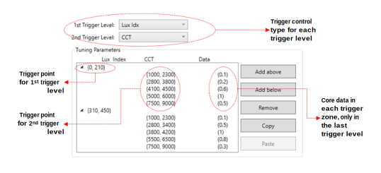
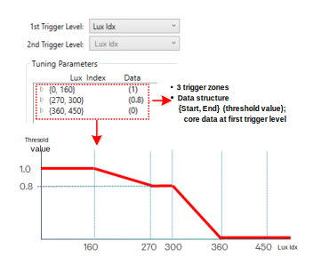
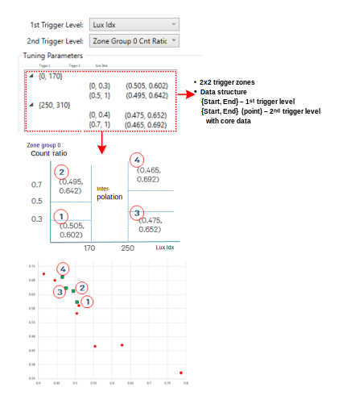
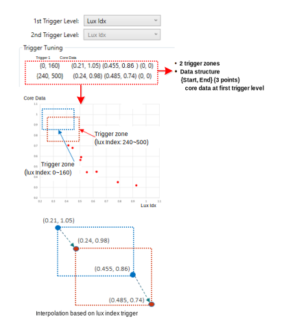

Many AWB functions require the configuration of trigger regions that are used to assign the appropriate core data. In response to this shared need, the Chromatix user interface has a common trigger data system that is easily configurable and has a consistent structure among AWB functions. The characteristics of the system are as follows:
- Consistent data structure
- Trigger control type: Defines the triggering factor and is configurable in each level of the trigger.
- Number of trigger levels: Multiple levels are allowed in the structure, but the number of trigger levels is fixed in each module.
- Trigger zone:
- Trigger point: Start and end values of the trigger.
- Core data: Data used when input is within the trigger range.
- Configurable number of trigger zones and trigger control types
- Trigger zone can be added and removed in each trigger level.
- Multiple options of trigger control type are available in some modules.
- Consistent interpolation

The following image explains the common user interface for the AWB trigger data system.

AWB common trigger structure: Use case 1
- # of Trigger levels: 1
- Trigger control type: lux index
- Core data: threshold value

- If lux index is 280 in a given scene, threshold value will be 0.8 (no interpolation)
- If lux index is 330 in a given scene, threshold value will be 0.4 (linear interpolation between 0.8 and 0.0 based on lux index)
AWB common trigger structure: Use case 2
- # of Trigger levels: 2
- Trigger control type: lux index (1st) and stats count ratio of zone group 0 (2nd)
- Core data: target point (r/g, b/g)

- If lux index is 150 and stats count ratio is 0.55 in a given scene, target point is “0.495, 0.642” (no interpolation)
- If lux index is 270 and stats count ratio is 0.55 in a given scene, target point is “0.470, 0.673” (linear interpolation between (3) and (4))
- If lux index is 210 and stats count ratio is 0.40 in a given scene, target point is “0.488, 0.638” (bilinear interpolation)
AWB common trigger structure: Use case 3
- # of Trigger levels: 1
- Trigger control type: lux index
- Core data: zone defined with 3 vertices

- If lux index is 140, zone defined in the first trigger zone is used (left top: 0.21, 1.05) (right bottom: 0.455, 0.86); no interpolation
- If lux index is 200, interpolated zone (left top: 0.225, 1.015) (right bottom: 0.47, 0.8); interpolated with the first and second trigger zones